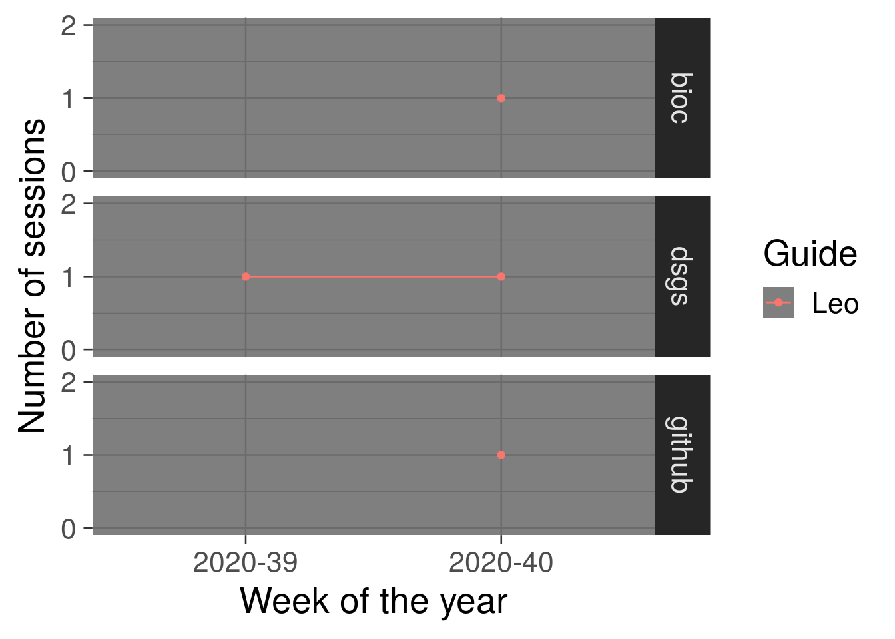
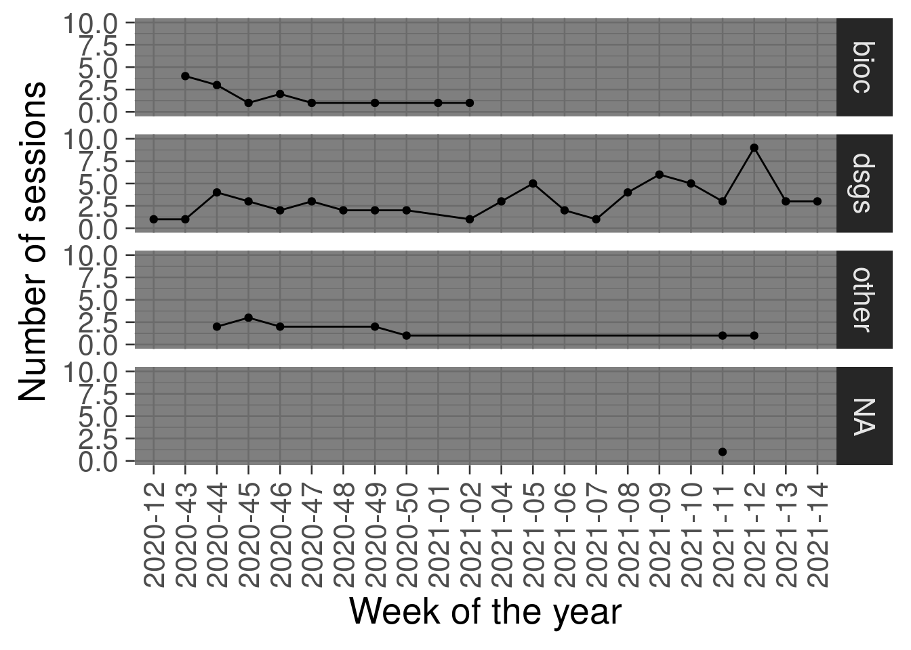

Data Science guidance session logs
Overview
This website contains the public logs for the Data Science guidance sessiones carried out by the R/Bioconductor-powered Team Data Science at LIBD.
DSgs-guide team members
Former members:
Graphs
Below we see the number of DSgs sessions across weeks for each of the guides for each type of help/guidance request over weeks of the year.

As a team, we can see the number of requests we’ve addressed over the weeks.

Finally, we can check if the overall number of help requests we’ve attended as the weeks have gone by.

These graphs are partially based on lcolladotor/mphtasessions.
R session information
Details on the R version used for making this book. The source code is available at lcolladotor/DSgs_logs.
## Packages used in the book
library("ggplot2")
library("lubridate")
library("dplyr")
library("here")
## Load the package at the top of your script
library("sessioninfo")
## Reproducibility information
print('Reproducibility information:')## [1] "Reproducibility information:"Sys.time()## [1] "2022-02-28 19:13:34 UTC"proc.time()## user system elapsed
## 2.859 0.146 2.934options(width = 120)
session_info()## ─ Session info ───────────────────────────────────────────────────────────────────────────────────────────────────────
## setting value
## version R Under development (unstable) (2022-02-25 r81808)
## os Ubuntu 20.04.4 LTS
## system x86_64, linux-gnu
## ui X11
## language (EN)
## collate en_US.UTF-8
## ctype en_US.UTF-8
## tz UTC
## date 2022-02-28
## pandoc 2.17.1.1 @ /usr/bin/ (via rmarkdown)
##
## ─ Packages ───────────────────────────────────────────────────────────────────────────────────────────────────────────
## package * version date (UTC) lib source
## bookdown 0.24 2021-09-02 [1] CRAN (R 4.2.0)
## cli 3.2.0 2022-02-14 [2] CRAN (R 4.2.0)
## colorspace 2.0-3 2022-02-21 [1] CRAN (R 4.2.0)
## crayon 1.5.0 2022-02-14 [2] CRAN (R 4.2.0)
## digest 0.6.29 2021-12-01 [2] CRAN (R 4.2.0)
## dplyr * 1.0.8 2022-02-08 [2] CRAN (R 4.2.0)
## ellipsis 0.3.2 2021-04-29 [2] CRAN (R 4.2.0)
## evaluate 0.15 2022-02-18 [2] CRAN (R 4.2.0)
## fansi 1.0.2 2022-01-14 [2] CRAN (R 4.2.0)
## farver 2.1.0 2021-02-28 [1] CRAN (R 4.2.0)
## fastmap 1.1.0 2021-01-25 [2] CRAN (R 4.2.0)
## generics 0.1.2 2022-01-31 [2] CRAN (R 4.2.0)
## ggplot2 * 3.3.5 2021-06-25 [1] CRAN (R 4.2.0)
## glue 1.6.2 2022-02-24 [2] CRAN (R 4.2.0)
## gtable 0.3.0 2019-03-25 [1] CRAN (R 4.2.0)
## here * 1.0.1 2020-12-13 [1] CRAN (R 4.2.0)
## highr 0.9 2021-04-16 [2] CRAN (R 4.2.0)
## htmltools 0.5.2 2021-08-25 [1] CRAN (R 4.2.0)
## jquerylib 0.1.4 2021-04-26 [1] CRAN (R 4.2.0)
## knitr 1.37 2021-12-16 [2] CRAN (R 4.2.0)
## labeling 0.4.2 2020-10-20 [1] CRAN (R 4.2.0)
## lifecycle 1.0.1 2021-09-24 [2] CRAN (R 4.2.0)
## lubridate * 1.8.0 2021-10-07 [1] CRAN (R 4.2.0)
## magrittr 2.0.2 2022-01-26 [2] CRAN (R 4.2.0)
## munsell 0.5.0 2018-06-12 [1] CRAN (R 4.2.0)
## pillar 1.7.0 2022-02-01 [2] CRAN (R 4.2.0)
## pkgconfig 2.0.3 2019-09-22 [2] CRAN (R 4.2.0)
## purrr 0.3.4 2020-04-17 [2] CRAN (R 4.2.0)
## R6 2.5.1 2021-08-19 [2] CRAN (R 4.2.0)
## RColorBrewer 1.1-2 2014-12-07 [1] CRAN (R 4.2.0)
## rlang 1.0.1 2022-02-03 [2] CRAN (R 4.2.0)
## rmarkdown 2.11 2021-09-14 [1] CRAN (R 4.2.0)
## rprojroot 2.0.2 2020-11-15 [2] CRAN (R 4.2.0)
## rstudioapi 0.13 2020-11-12 [2] CRAN (R 4.2.0)
## scales 1.1.1 2020-05-11 [1] CRAN (R 4.2.0)
## sessioninfo * 1.2.2 2021-12-06 [2] CRAN (R 4.2.0)
## stringi 1.7.6 2021-11-29 [2] CRAN (R 4.2.0)
## stringr 1.4.0 2019-02-10 [2] CRAN (R 4.2.0)
## tibble 3.1.6 2021-11-07 [2] CRAN (R 4.2.0)
## tidyselect 1.1.2 2022-02-21 [2] CRAN (R 4.2.0)
## utf8 1.2.2 2021-07-24 [2] CRAN (R 4.2.0)
## vctrs 0.3.8 2021-04-29 [2] CRAN (R 4.2.0)
## withr 2.4.3 2021-11-30 [2] CRAN (R 4.2.0)
## xfun 0.29 2021-12-14 [2] CRAN (R 4.2.0)
## yaml 2.3.5 2022-02-21 [2] CRAN (R 4.2.0)
##
## [1] /usr/local/lib/R/host-site-library
## [2] /usr/local/lib/R/site-library
## [3] /usr/local/lib/R/library
##
## ──────────────────────────────────────────────────────────────────────────────────────────────────────────────────────This book was last updated on 2022-02-28 19:13:34.